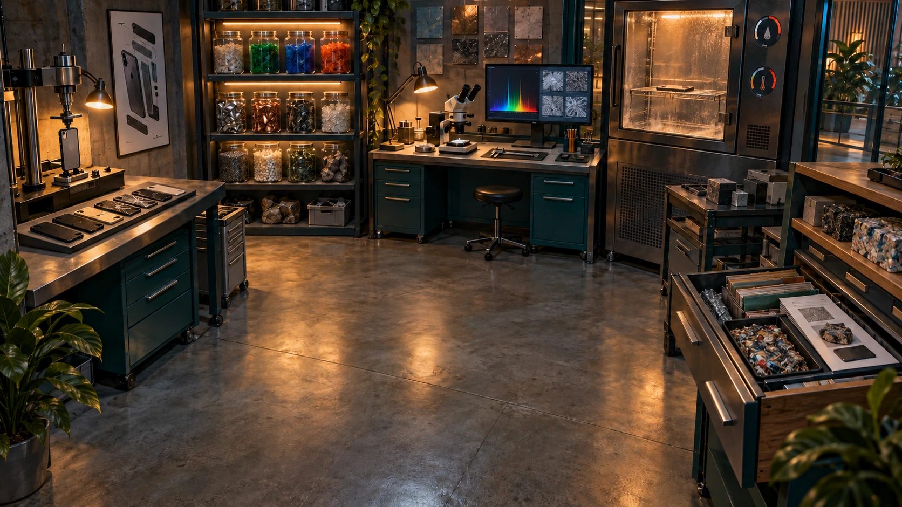

Broninhoud vastleggen
Tekst, oefeningen, afbeeldingen en video’s vergelijken met echte leerhandelingen. De originele cursus blijft als volledige naslag beschikbaar.
NOVA · Business Ethics · Productieplan
Een zelfstandig te spelen Business Ethics-module waarin een beginner alle essentiële leerstof via onderzoeken, manipuleren, gevolgen, gesprekken en nieuwe toepassingen leert.
Tekst, oefeningen, afbeeldingen en video’s vergelijken met echte leerhandelingen. De originele cursus blijft als volledige naslag beschikbaar.
Een locatiebriefing en beknopt theorieoverzicht maken de opdracht en begrippen duidelijk. Gesprekken geven uitleg, voorbeelden en verdieping.
Door ruimtes bewegen, objecten bekijken, gereedschap gebruiken, verbanden ordenen en fictieve modellen veranderen. Voorspellingen en gevolgen worden naast elkaar gelegd.
Alle noodzakelijke aanwijzingen verzamelen. De gebiedspuzzel vraagt om een verklaring én passend bewijs; de uitkomst opent de volgende locatie.
Een leseindpuzzel in een gewijzigde situatie en aanvullende vragen scheiden theoriekennis van het toevallig herkennen van één verhaal.
Inhoudelijke broncontrole, functionele routecontrole, leesbaarheid en beoordeling van redeneringen. Daarna onderzoek naar retentie en transfer; positieve speelervaring bewijst die niet.
Iedere les heeft een eigen vraag en meerdere plaatsen. Je bezoekt die plaatsen omdat een inhoudelijk probleem je erheen leidt. De route van les 1 bevat acht gebieden; de overige routes elk zes.
Gebied 1
Je leert het verschil tussen wat de cijfers mogelijk maken en welke keuze je rechtvaardig vindt. Je kunt uitleggen wie door een stroomplan wordt geholpen en wie moet wachten.
Waarom deze puzzel?
Zonder uitvoerbaar én verantwoord noodplan weet de chauffeur niet welke aanvragen hij eerst moet bedienen.
Waarom daarna verder?
De ontvangstdocumenten in het depot laten zien welke kosten je verdeling nog niet zichtbaar maakte.
Gebied 2
Je leert waarom een productfactuur niet alle gevolgen van productie laat zien. Je onderscheidt schade betalen, schade voorkomen en afspraken maken over gedeeld water.
Waarom deze puzzel?
De factuur, het vissersbericht en de waterafspraak beschrijven verschillende delen van hetzelfde probleem.
Waarom daarna verder?
Volg nu de materialen naar het retour- en verwerkingsstation: daar zie je wie buiten de factuur blijft.
Gebied 3
Je volgt een batterij van grondstof tot afval. Je leert zien waar de voordelen terechtkomen, waar de lasten ontstaan en wie invloed heeft op de voorwaarden.
Waarom deze puzzel?
Een verzendadres vertelt nog niet waar winning, gebruik en afval terechtkomen. Je moet de route eerst reconstrueren.
Waarom daarna verder?
Een retourticket wijst naar de reparatiewerkplaats. Daar kun je onderzoeken waarom het systeem een ander doel beloont dan je verwacht.
Gebied 4
Je ontdekt hoe een prestatiedoel gedrag stuurt, ook wanneer medewerkers goede bedoelingen hebben. Je onderzoekt welke regel moet veranderen om zorgvuldig werk mogelijk te maken.
Waarom deze puzzel?
De machine beloont haar ingestelde doel. Een ingreep zonder begrip van die meetlat kan hetzelfde patroon herhalen.
Waarom daarna verder?
Wie mag die meetlat veranderen en wie ontvangt de opbrengst? Het bestuur en het eigendomsregister laten de bevoegdheden zien.
Gebied 5
Je leert dat werken, eigenaar zijn en kunnen beslissen verschillende posities zijn. Je onderzoekt hoe bezit en spelregels opbrengsten, toegang en invloed verdelen.
Waarom deze puzzel?
De investeringssleutel, het grootboek en de marktregels tonen verschillende bronnen van zeggenschap.
Waarom daarna verder?
De eigendomsregisters vertellen wie opbrengst ontvangt. Onderzoek in het archief hoe inkomen, vermogen en toegang worden verdeeld.
Gebied 6
Je leert inkomen en bezit uit elkaar houden en ongelijkheid voorzichtig beoordelen. Je onderzoekt welke beleidskeuze welke verdeling verandert en wat de cijfers niet laten zien.
Waarom deze puzzel?
Het register bevat zowel inkomens als bezittingen. Het bestuur moet weten welk mechanisme verandert en welke conclusie de cijfers nog niet dragen.
Waarom daarna verder?
Een eerlijkere verdeling vertelt nog niet of productie binnen ecologische grenzen blijft. Neem de rekeningen mee naar het materialenlab.

Gebied 7
Je leert groei, verbetering per product en totale belasting apart bekijken. Zo kun je beoordelen wat een duurzaamheidsvoorstel werkelijk aantoont en welke behoeften het dient.
Waarom deze puzzel?
Een leverancier toont minder materiaal per toestel. Het bestuur moet weten wat er met totale belasting gebeurt en welke toekomstclaims nog bewijs vragen.
Waarom daarna verder?
Het productieplan wordt een campagne. Onderzoek in de etalage hoe zichtbaarheid en verkoopprikkels de extra vraag kunnen beïnvloeden.
Gebied 8
Je leert hoe aanbod, reclame en verwachtingen onze keuzes beïnvloeden. Je onderzoekt of mensen bruikbare alternatieven zien en welke gevolgen buiten een financieel doel verdwijnen.
Waarom deze puzzel?
Een nieuwe situatie vraagt om meerdere lenzen. Alleen een verkoopsignaal laat de belangen en systeemkeuzes niet volledig zien.
Waarom daarna verder?
Je gebruikt je inzichten in een nieuw stedelijk laadnetwerk, gevolgd door aanvullende vragen. Daarna begint les 2.
Gebied 1
Je leert waarom mensen niet altijd alles rustig afwegen en hoe de werkomgeving daarbij meespeelt. Je onderzoekt wanneer een routine helpt en wanneer heroverwegen nodig is.
Waarom deze puzzel?
De routine keurt een oud leveranciersdossier opnieuw goed, terwijl eigenaar en omstandigheden veranderd zijn.
Waarom daarna verder?
De retourruimte bevat de gevolgen die de oude routine niet registreerde.
Gebied 2
Je leert herkennen hoe woorden schade minder zichtbaar kunnen maken. Je onderscheidt een verklaring van gedrag van een rechtvaardiging, zonder zomaar slechte bedoelingen toe te schrijven.
Waarom deze puzzel?
Werkende toestellen verdwijnen als 'voorraadoptimalisatie'; taakverdeling verbergt wie het protocol kan veranderen.
Waarom daarna verder?
De vergaderkamer moet de verspreide verantwoordelijkheid gezamenlijk bespreken.
Gebied 3
Je leert hoe stilte en groepsverwachtingen een besluit sturen. Je onderzoekt hoe overleg zo kan worden ingericht dat twijfels en andere informatie werkelijk meetellen.
Waarom deze puzzel?
De publieke notulen melden instemming; afzonderlijke reacties bevatten gedeelde zorgen.
Waarom daarna verder?
De aandachtstudio kan laten zien hoe vergelijkbare verwachtingen buiten de vergadering ontstaan.
Gebied 4
Je volgt hoe een handige functie een gewoonte kan worden. Je leert herkennen hoe reclame, gegevens en regels keuzes sturen en welke invloed gebruikers daarop hebben.
Waarom deze puzzel?
De app maakt voortdurend vervangen makkelijk en reparatie moeilijk vindbaar; gebruikers ervaren dit als de normale route.
Waarom daarna verder?
De servicepoort kan nu beoordelen of zichtbare alternatieven ook werkelijk bereikbaar zijn.
Gebied 5
Je leert het verschil tussen een keuze op een scherm en een keuze die iemand echt kan gebruiken. Je onderzoekt kosten, afhankelijkheden en verwachtingen die overstappen moeilijk maken.
Waarom deze puzzel?
Er bestaan drie modellen, maar gegevens, onderdelen en werkcontacten zitten in hetzelfde ecosysteem.
Waarom daarna verder?
Het veranderatelier kan gericht werken aan de gevonden handelingsruimte.
Gebied 6
Je leert wat nodig is om een terechte zorg ook werkelijk te kunnen uitspreken en opvolgen. Je onderzoekt steun, tijd en bevoegdheid naast persoonlijke moed.
Waarom deze puzzel?
Een medewerker heeft bewijs van verspilling, maar spreken heeft sociale risico's en het protocol blijft onveranderd.
Waarom daarna verder?
De volgende les onderzoekt waarom bestuur, kapitaal en zeggenschap deze ruimte mede bepalen.
Gebied 1
Je leert waarom een onderneming mensen en middelen samenbrengt en hoe groter worden zowel voordelen als afhankelijkheid kan veroorzaken. Je onderscheidt efficiëntie van invloed op de markt.
Waarom deze puzzel?
De hub maakt reparatie goedkoper, maar nieuwe aanbieders moeten haar netwerkvoorwaarden accepteren.
Waarom daarna verder?
De investeringskamer beoordeelt welke uitbreiding de hub kiest en welke horizon daarbij telt.
Gebied 2
Je leert hoe het gekozen tijdvenster en financiële doel bepalen welk voorstel gunstig lijkt. Je onderzoekt welke waarde zichtbaar wordt en wat buiten de beoordeling blijft.
Waarom deze puzzel?
Een reparatiecentrum verliest op de kwartaalkaart omdat latere opbrengsten en gevolgen niet zichtbaar zijn.
Waarom daarna verder?
Het samenwerkingsarchief laat zien welke partijen door deze horizon risico dragen.
Gebied 3
Je leert hoe waarde ontstaat door bijdragen van meerdere partijen. Je onderzoekt hoe hun afhankelijkheid, risico's en rechten in een besluit moeten worden meegenomen.
Waarom deze puzzel?
Een verhuizing wordt alleen als kapitaalbesluit behandeld, terwijl anderen specifieke investeringen en risico's hebben.
Waarom daarna verder?
De bestuurskamer moet bepalen hoe deze claims in zeggenschap en verantwoording terechtkomen.
Gebied 4
Je leert dat een besluit al wordt gestuurd door het formulier, de meetlat en de rechten vóór het overleg. Je onderzoekt hoe inspraak ook invloed op het besluit kan krijgen.
Waarom deze puzzel?
Stakeholders spreken, maar het besluitformulier en de timing laten hun gevolgen nauwelijks meewegen.
Waarom daarna verder?
De kapitaalbalie moet laten zien welke externe financiële voorwaarden deze ruimte blijven begrenzen.
Gebied 5
Je leert hoe geldstromen bepalen welke plannen ruimte krijgen. Je onderzoekt hoe financiële druk invloed kan hebben zonder dat een financier iedere dagelijkse beslissing neemt.
Waarom deze puzzel?
Twee maatschappelijk relevante plannen krijgen verschillende toegang tot financiering; een fonds kan voorwaarden of kapitaal wijzigen.
Waarom daarna verder?
Het waarderegister kan bepalen welke gevolgen daardoor buiten het rendementsbeeld blijven.
Gebied 6
Je leert een financieel verklaarbare keuze onderscheiden van een ethisch verdedigbare keuze. Je maakt gevolgen voor mensen en leefomgeving zichtbaar naast de begroting.
Waarom deze puzzel?
De begroting toont besparing, maar verbergt sociale en ecologische gevolgen; concurrentiedruk maakt de grens verschuifbaar.
Waarom daarna verder?
De technologieroute onderzoekt vervolgens hoe zulke waarden in systemen en infrastructuur terechtkomen.
Gebied 1
Je leert hoe een technisch ontwerp sommige mensen toegang geeft en anderen afhankelijk maakt. Je onderzoekt de werking bij uitval en wie voor een bruikbaar alternatief zorgt.
Waarom deze puzzel?
Een automatische deur helpt veel bezoekers, maar bij uitval kan een rolstoelgebruiker niet zelfstandig naar binnen. Onderbouw een toegangsoplossing voordat de onderhoudsroute wordt geopend.
Waarom daarna verder?
Volg nu de infrastructuur die de ingang van energie en leveringen voorziet.
Gebied 2
Je leert dat een dienst afhankelijk is van verbindingen die meestal op de achtergrond blijven. Je onderzoekt wie het netwerk beheert en onder welke voorwaarden anderen kunnen aansluiten.
Waarom deze puzzel?
Een gerepareerd apparaat bereikt de klant alleen via een netwerk waarvoor kleine reparateurs geen standaardkoppeling hebben. Reconstrueer de route en stel verantwoorde aansluiting vast.
Waarom daarna verder?
De gegevens die je koppeling nodig heeft, liggen in de datakluis.
Gebied 3
Je volgt hoe één handeling gegevens oplevert en hoe die worden gebruikt. Je onderzoekt voordeel, controle en afhankelijkheid wanneer gegevens of diensten moeilijk te verplaatsen zijn.
Waarom deze puzzel?
De hub kan haar onderhoudsgegevens niet naar een andere dienst verplaatsen zonder functies te verliezen. Onderzoek doelen, datagebruik en overstapkosten; bouw een gecontroleerde export.
Waarom daarna verder?
Dezelfde data voeden de sorteerband; onderzoek nu wat zij leert en selecteert.
Gebied 4
Je leert hoe het doel en de oefendata van een systeem bepalen wat het herkent en selecteert. Je onderzoekt fouten, gevolgen en wat een beperkte test wel of niet bewijst.
Waarom deze puzzel?
De band heet circulair maar laat bepaalde materialen liggen. Onderzoek herkenning, doel en controle voordat de pilot naar de rapportagekamer mag doorlopen.
Waarom daarna verder?
Volg nu hoe de resultaten als duurzaamheidsinformatie in het dashboard verschijnen.
Gebied 5
Je leert waarom een gunstige score nog niet alle maatschappelijke gevolgen laat zien. Je koppelt een ontbrekend gevolg aan degene die het kan onderzoeken of veranderen.
Waarom deze puzzel?
Het dashboard toont alleen verkoopsnelheid en één groene indicator. Herstel de verbinding tussen prestatie, maatschappelijke gevolgen en verantwoordelijke rollen.
Waarom daarna verder?
Gebruik deze diagnose om in de vrijgavekamer een uitvoerbare interventie te formuleren.
Gebied 6
Je leert voorwaarden maken voor een verantwoorde invoering van techniek. Je verbindt risico's aan ontwerp, bevoegdheden en een moment waarop het plan kan worden bijgesteld.
Waarom deze puzzel?
Een publieke partner wil de service gebruiken. Maak uit je bewijs een uitvoerbaar plan met ontwerp, beheer en publieke voorwaarden voordat je de pilot vrijgeeft.
Waarom daarna verder?
Een nieuwe sector test straks of je dezelfde mechanismen zelfstandig herkent.
Gebied 1
Je leert een goede indruk onderscheiden van aantoonbaar goed werk. Je onderzoekt welke belofte past bij het bewijs en welke maatschappelijke verwachtingen het bedrijf probeert te beantwoorden.
Waarom deze puzzel?
Bezoekers krijgen de indruk dat de hele service al duurzaam is. Onderzoek de beloften en maatschappelijke verwachtingen; verbind elke uitspraak met haar werkelijke reikwijdte voordat de stand opent.
Waarom daarna verder?
Volg de poster terug naar de studio waar de communicatie wordt gemaakt.
Gebied 2
Je leert precies aanwijzen hoe een groene boodschap een verkeerde indruk kan geven. Je zoekt wat ontbreekt en maakt een uitspraak die iemand kan controleren.
Waarom deze puzzel?
De drukproef bevat vier verschillende probleemclaims. Diagnoseer hun primaire mechanisme en bouw een controleerbare tekst voordat de posters naar de materiaalroute gaan.
Waarom daarna verder?
Een controleerbare tekst vraagt materiaalbewijs; ga naar de werkplaats.
Gebied 3
Je leert waarom een organisatie niet alles direct kan veranderen en hoe je daar eerlijk over communiceert. Je toetst of een pilot ook verbetering van de totale productie aantoont.
Waarom deze puzzel?
Een kleine materiaalpilot krijgt een grote toekomstbelofte. Onderzoek padafhankelijkheid en vergelijk per-productverbetering met totale productie voordat de route naar inzameling wordt geopend.
Waarom daarna verder?
Volg nu wat na verkoop terugkomt en of de beloofde circulariteit echt doorwerkt.
Gebied 4
Je leert een deelverbetering bekijken binnen de hele productroute. Je onderzoekt wat gebeurt vóór de verkoop, tijdens gebruik en na het afdanken.
Waarom deze puzzel?
De campagne gebruikt een duurzame collectie als bewijs voor een veranderd bedrijfsmodel. Volg het materiaal voorbij de verkoop en vergelijk deelinitiatief met productritme en volume.
Waarom daarna verder?
Neem deze gegevens mee naar het archief waar investeerders en concurrenten de claims beoordelen.
Gebied 5
Je leert wie voordeel krijgt en wie risico draagt wanneer partijen verschillende informatie hebben. Je onderzoekt welk bewijs vóór een aankoop of investering beschikbaar moet zijn.
Waarom deze puzzel?
Een financier ziet alleen de groene poster, terwijl een concurrent dure procesverbetering uitvoert. Onderzoek informatie-asymmetrie, reputatie en ethische gevolgen voordat het dossier openbaar wordt.
Waarom daarna verder?
Breng de gevonden prikkels en gevolgen naar het forum voor een systeemreactie.
Gebied 6
Je brengt eerlijke communicatie en daadwerkelijke verandering samen. Je maakt een belofte met passend bewijs, duidelijke verantwoordelijkheden en controle op de uitvoering.
Waarom deze puzzel?
Het publiek vraagt een houdbare belofte en echte voortgang. Combineer bewijs, organisatorische uitvoering en institutionele verantwoording voordat de finale publicatie doorgaat.
Waarom daarna verder?
Een nieuwe-sectorcasus toetst straks of je deze systeemanalyse buiten de warenmarkt kunt toepassen.
Elke ruimte heeft een eigen inhoudelijke functie; de obstakels volgen uit de theorie.
De student onderzoekt wereldobjecten en bewaart bewijs naast eigen hypothesen en notities.
Twee NPC's bieden aanvullende of botsende perspectieven en vertellen wat ze niet weten.
Een korte uitleg en demonstratie gaat vooraf aan onbekende zelfstandige redenering.
Pas na relevante onderzoekshandelingen combineert de student bewijs voor een betekenisvolle overgang.
Een hoofdstukfinale en afzonderlijke vragen gebruiken gewijzigde of andere-sectorgevallen.
XP erkent deelname en revisie; beheersing vraagt zelfstandig onderbouwde toepassing.
Verschillende ethische prioriteiten zijn bespreekbaar; feitelijke en causale fouten krijgen gerichte feedback.
Iedere plek heeft een opdrachtbriefing; een optioneel theorieoverzicht geeft beginners vooraf een begrippenkader.
NPC-verdieping legt in drie leesbare lagen het begrip, de specifieke casus en een uitgewerkt voorbeeld met grenzen uit.
De onderbouwing is een kritische selectie van 25 primaire bronnen, met veertien ontwerpvereisten en expliciete beperkingen. Voor blended gebruik volgt op individueel onderzoek een vergelijking van bewijskaarten, kritiek op interventies en een begeleide nabespreking. De volledige uitleg staat in het onderzoeksdossier.
De huidige module heeft geschreven inhoud en werkende routes. Bronverwijzingen en correct aangeklikte antwoorden bewijzen nog geen leerresultaat. Dertien oorspronkelijke clips blijven verplichte onderzoeksbronnen omdat niet alle gesproken details zelfstandig zijn vervangen of geverifieerd. Een clip openen en een bronnotitie maken is geen verificatie van volledig kijken. Voor een volledige vervangingsclaim moeten inhoudelijke gelijkwaardigheid, toegankelijkheid en onafhankelijke beoordeling ook kloppen.
Open Beheer in het spel en gebruik fabian1. Je kunt ieder gebied, iedere interactie, gesprekken, gebiedspuzzels, leseindpuzzels en vragen direct bekijken. Je gewone voortgang en notities blijven behouden. Er zijn 64 uitgebreide NPC-theoriepanelen.